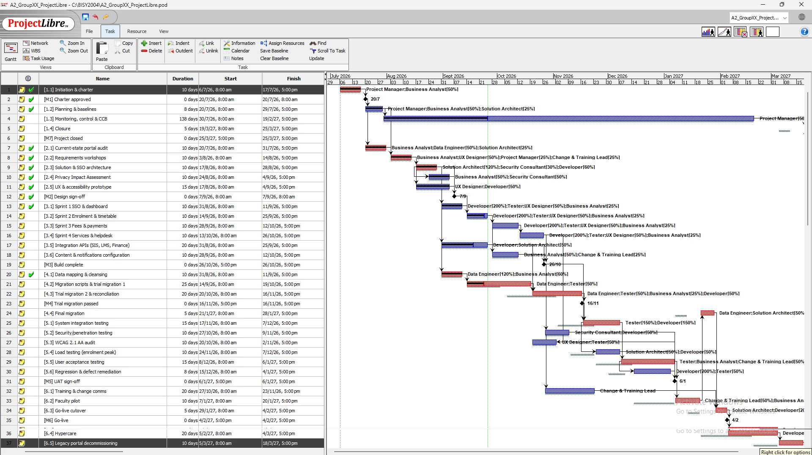
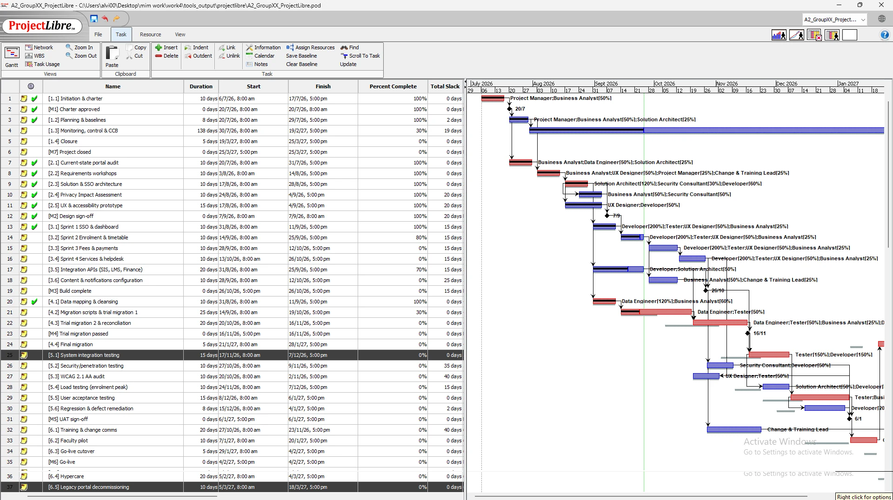
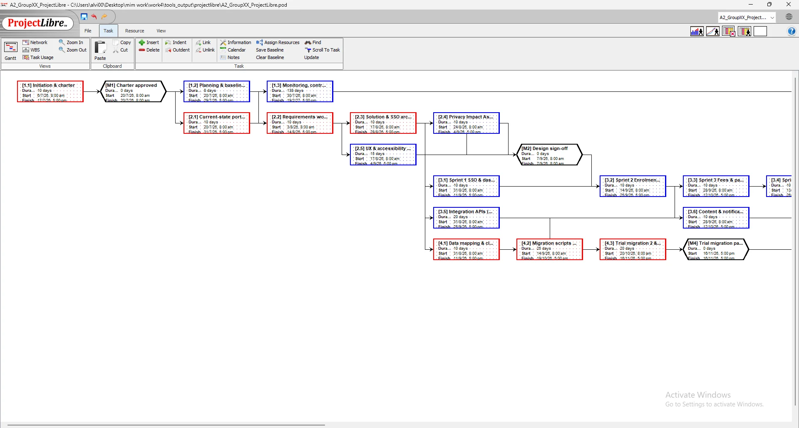
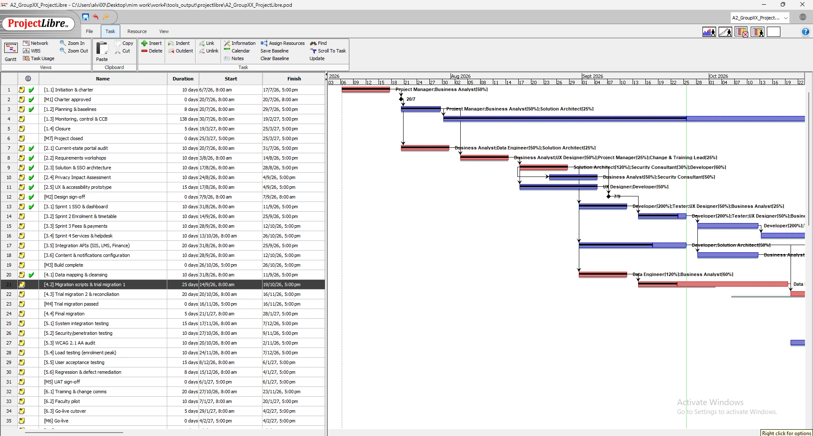
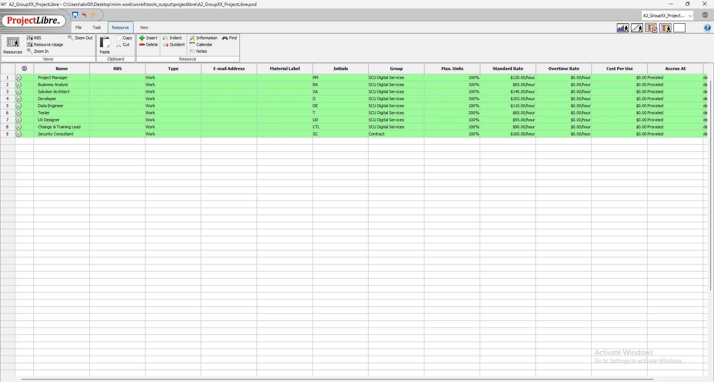
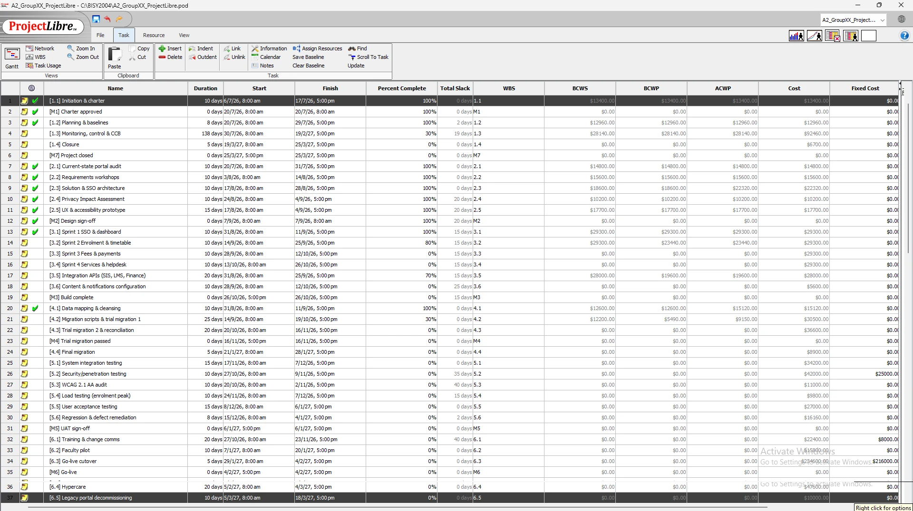
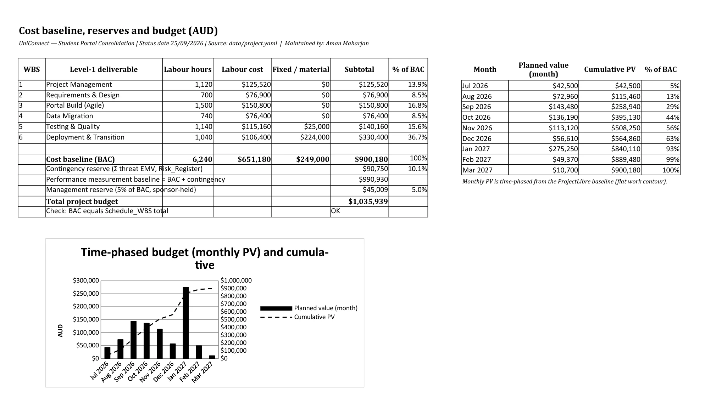
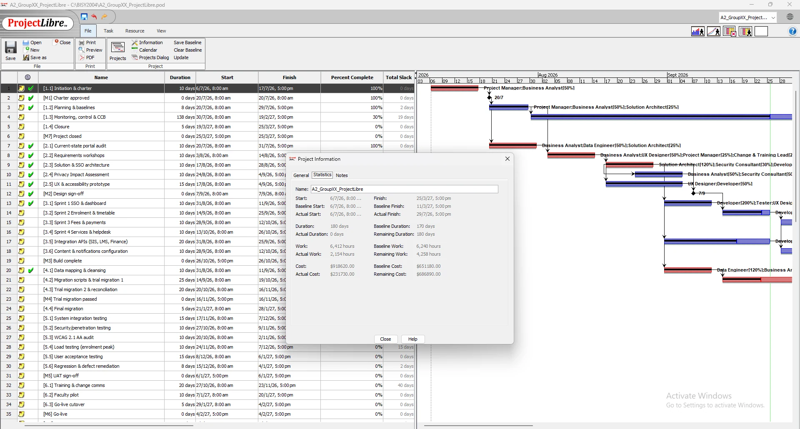
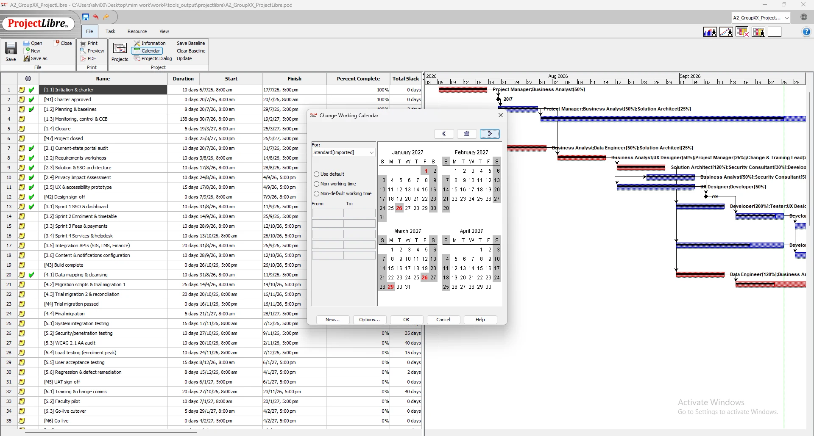

Page 4
Schedule, critical path & cost
Purpose: Show the baseline schedule, critical path, cost baseline and what the status-date slip means.
ProjectLibre schedule

A2_GroupXX_ProjectLibre.pod.
A2_GroupXX_ProjectLibre.pod.
A2_GroupXX_ProjectLibre.pod.Milestones
| ID | Milestone | Baseline | Forecast (25 Sep) | Status |
|---|---|---|---|---|
| M1 | Charter approved | 17 Jul 2026 | 17 Jul 2026 | Achieved |
| M2 | Design sign-off | 4 Sep 2026 | 4 Sep 2026 | Achieved |
| M3 | Build complete | 26 Oct 2026 | 26 Oct 2026 | On track |
| M4 | Trial migration passed | 2 Nov 2026 | 16 Nov 2026 | At risk |
| M5 | UAT sign-off | 14 Dec 2026 | 6 Jan 2027 | At risk |
| M6 | Go-live | 20 Jan 2027 | 4 Feb 2027 | At risk |
| M7 | Project closed | 11 Mar 2027 | 25 Mar 2027 | At risk |
Critical path
The baseline critical path runs 1.1 → 2.1 → 2.2 → 2.3 → 4.1 → 4.2 → 4.3 → 5.1 → 5.5 → 6.2 → 4.4 → 6.3 → 6.4 → 6.5 → 1.4 (170 working days, finish 11 Mar 2027). It runs through data migration and testing: the Agile build has 5 days of float and training 30 days, so they can absorb delay but migration cannot. A Python forward/backward pass gave the same dates and floats as ProjectLibre (Kerzner, 2022).
| WBS | Task | Duration | Early start | Early finish | Total float | Free float |
|---|---|---|---|---|---|---|
| 1.2 | Planning & baselines | 8d | 20 Jul 2026 | 29 Jul 2026 | 2d | 0d |
| 1.3 | Monitoring, control & CCB | 138d | 30 Jul 2026 | 19 Feb 2027 | 9d | 9d |
| 2.4 | Privacy Impact Assessment | 10d | 24 Aug 2026 | 4 Sep 2026 | 10d | 0d |
| 2.5 | UX & accessibility prototype | 15d | 17 Aug 2026 | 4 Sep 2026 | 10d | 0d |
| 3.1 | Sprint 1 SSO & dashboard | 10d | 31 Aug 2026 | 11 Sep 2026 | 5d | 0d |
| 3.2 | Sprint 2 Enrolment & timetable | 10d | 14 Sep 2026 | 25 Sep 2026 | 5d | 0d |
| 3.3 | Sprint 3 Fees & payments | 10d | 28 Sep 2026 | 12 Oct 2026 | 5d | 0d |
| 3.4 | Sprint 4 Services & helpdesk | 10d | 13 Oct 2026 | 26 Oct 2026 | 5d | 0d |
| 3.5 | Integration APIs (SIS, LMS, Finance) | 20d | 31 Aug 2026 | 25 Sep 2026 | 5d | 5d |
| 3.6 | Content & notifications configuration | 10d | 28 Sep 2026 | 12 Oct 2026 | 15d | 10d |
| 5.2 | Security/penetration testing | 10d | 27 Oct 2026 | 9 Nov 2026 | 25d | 25d |
| 5.3 | WCAG 2.1 AA audit | 10d | 20 Oct 2026 | 2 Nov 2026 | 30d | 30d |
| 5.4 | Load testing (enrolment peak) | 10d | 10 Nov 2026 | 23 Nov 2026 | 15d | 15d |
| 5.6 | Regression & defect remediation | 8d | 1 Dec 2026 | 10 Dec 2026 | 2d | 2d |
| 6.1 | Training & change comms | 20d | 27 Oct 2026 | 23 Nov 2026 | 30d | 30d |
| Scenario | Float | Effect on project finish |
|---|---|---|
| [4.2] Migration scripts & trial migration 1 +5 days | 0d | finish moves 5 working days to 18 Mar 2027 |
| [5.1] System integration testing +5 days | 0d | finish moves 5 working days to 18 Mar 2027 |
| [6.3] Go-live cutover +5 days | 0d | finish moves 5 working days to 18 Mar 2027 |
| [6.1] Training & change comms +5 days | 30d | absorbed — 25d float left |
Baseline vs actual at 25 Sep 2026

A2_GroupXX_ProjectLibre.pod.Trial migration 1 (4.2) found 4.7% duplicate records and was re-estimated from 15 to 25 days. Because 4.2 has zero float, the forecast go-live moved from 20 Jan 2027 to 4 Feb 2027, one working day before the hard deadline. Architecture (2.3) and mapping (4.1) finished on time but used 20% more effort.
Resources and cost

A2_GroupXX_ProjectLibre.pod.
A2_GroupXX_ProjectLibre.pod.| WBS | Deliverable | Hours | Labour | Fixed | Total |
|---|---|---|---|---|---|
| 1 | Project Management | 1,120 | $125,520 | $0 | $125,520 |
| 2 | Requirements & Design | 700 | $76,900 | $0 | $76,900 |
| 3 | Portal Build (Agile) | 1,500 | $150,800 | $0 | $150,800 |
| 4 | Data Migration | 740 | $76,400 | $0 | $76,400 |
| 5 | Testing & Quality | 1,140 | $115,160 | $25,000 | $140,160 |
| 6 | Deployment & Transition | 1,040 | $106,400 | $224,000 | $330,400 |
| Cost baseline (BAC) | $900,180 | ||||
| Contingency reserve (Σ risk EMV, 10.1% of BAC) | $90,750 | ||||
| Management reserve (5% of BAC, sponsor-held) | $45,009 | ||||
| Total budget | $1,035,939 |

A2_GroupXX_ProjectData.xlsx › Cost_Baseline.
A2_GroupXX_ProjectLibre.pod.
A2_GroupXX_ProjectLibre.pod.Interpretation
Labour is $651,180 and fixed costs (licences, hosting, pen-test, training) $249,000. The contingency reserve equals the expected monetary value of the threats, so each dollar is tied to a named risk; the management reserve covers unknowns and needs sponsor approval. Spending peaks in January 2027 when licences activate at cutover.